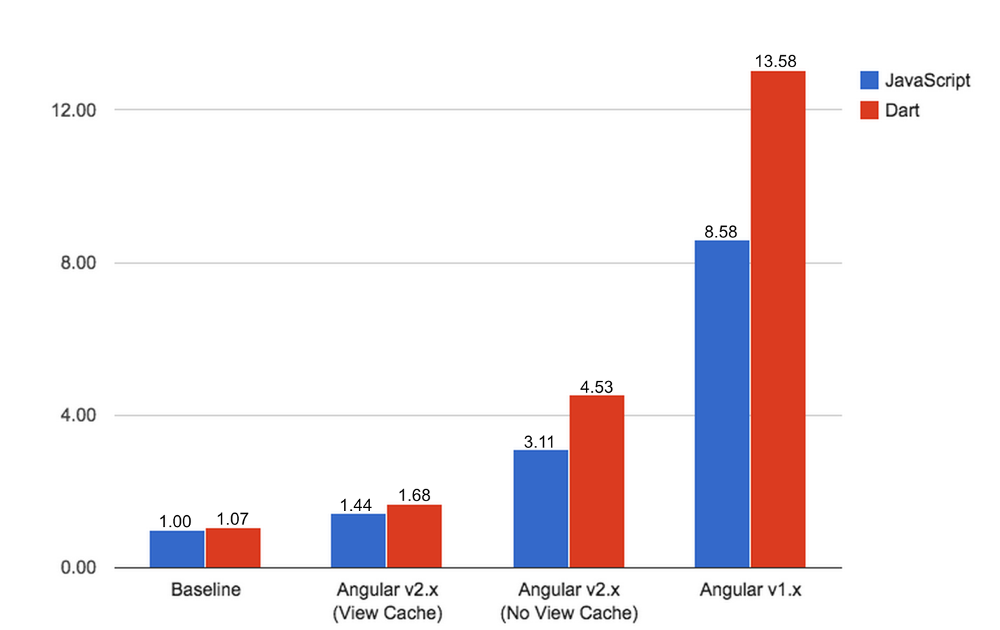

Cross-Platform


Flexibility
Performance

- AOT compilation
- Lazy loading
- Web Workers
- Server-side rendering
- Change detection
- View caching
Modules
@NgModule({
imports: [
BrowserModule,
CityModule,
routing
],
declarations: [
AppComponent
],
providers: [
CityService,
UserService
],
bootstrap: [AppComponent]
})
export class AppModule {}
Components
@Component({
selector: 'app-component',
template: `
{{ title }}
`
})
export class AppComponent {
title: string;
constructor(private router: Router, private service: AppService) {}
ngOnInit() {
this.title = this.service.getTitle();
}
onSelect(city: City): void {
this.router.navigate(['/city', city.id]);
}
}
Routing
const appRoutes: Routes = [
{ path: 'city', component: CityComponent },
{
path: 'admin',
component: AdminComponent,
canActivate: [AuthGuard],
children: [{
path: '',
children: [
{ path: 'cities', component: ManageCitiesComponent },
{ path: '', component: AdminDashboardComponent }
]
}]
}
];
export const routing: ModuleWithProviders =
RouterModule.forRoot(appRoutes);